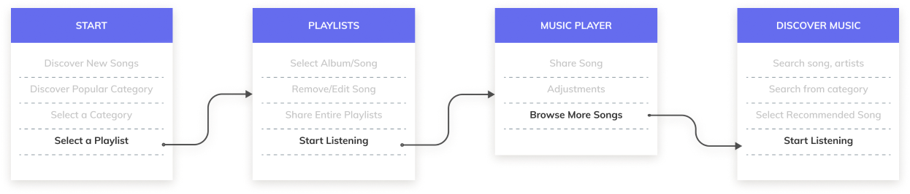
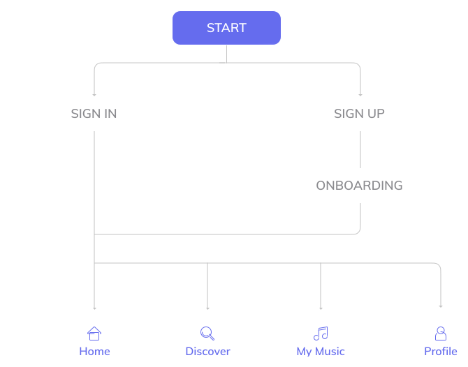

Back
Back
Title
Sound Cloud Mobile Application
Overview
Sound Cloud is a new way to listen to music for Iranian users. With Sound Cloud, users can listen to new Persian songs and other famous international songs.
Problem
All the primary actions were accessible from the hamburger menu and by the growth of the company it was the time to redesign the app to define the new structure to the app.
The goal
Developing a music mobile application that allows user to search and listen music playlist in a clean and easy to interact interface.
Role
User Interface Design
Process
My process is relative to projects and it is determined by many factors such as the project goals, business needs, complexity of the problem, time and etc. Here I’ll describe my process for solving this problem.
Discover
Understanding the core of the product
Before doing any ideation I started to analyzing the existing design page by page to understand the core of the product. Analyzing comments in the app store also helped me to know the pain points and strength of the current design.
Key Findings
1. Features Discoverability issues
2. They don’t feel the emotionally bounded to app.
3. Too many taps for a simple action
Initial Proposal
Proposed a design with fast access to significant sections (Home, discover, My Music Library, profile) and made accessibility straight.
-Design principles: clean, emotionally connected (colors, icons).
-Home screen more personalized (Recently released songs, Popular artists/songs,Recommended artist/song)
-Navigation and transition should be easily understandable.
Ideation
Design
Crafting a Holistic Look and Feel
This is a style guide for Soundcloud brand and mobile application.
Colors
#969BFF
#656CEE
Typography
Aa
Mulish Typography (Primary)
User Flows
As the saying goes, “A good start is half the battle." Before going into user interface design, I made sure to polish the features and user interaction flow. The following feature flowcharts describe the content strategy and user flow through the app, listing potential features users may interact with. The creation of flowcharts are the basis for refining the workload necessary for developers and higher-fidelity designs later on, and for discovering potential issues behind the product in a quick and time-efficient way.
Splash and Onboarding
When the users start the app, they will be led through a Sign In or Sign Up and onboarding process before proceeding to their default screen, the Home screen, which houses a footer navbar. The navbar has four tab options:
Home - where users go to see and explore different songs, albums and artists.
Discover - where users go to browse different songs, albums and artists.
My Music - where users go to find their saved songs, albums and playlists.
Profile - where users go to view their public profile and settings.
Home and Discover Screens
Here I put some of the screens from the primary actions in this music app. Main screen for discovering new songs or artists plus the browsing page to help users find the song they're looking for.

Playlists and Player Screens
Users can continue listening music from the library in "My Music" screen or from artists profile page. My music page is a place that allows user to search in its own music playlist or even creating new playlist.

What I learnt from this Project
Simplicity is Strength. As a designer, we are often lured by attractive, trendy and out of the box designs. But, We must always remember the ‘why’. The primary goal is to understand the user, their problems and then come up with a design that solves it.
Process in Essential. For a project that is vast, it gives you a roadmap to navigate through what can be a foggy route. This is especially useful when you’re starting out.
This is the end of the page, I sincerely appreciate you for taking out time to look through my design.